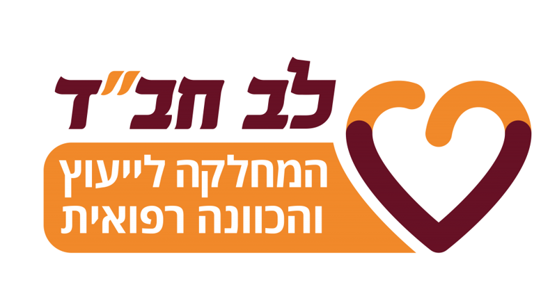

הדיווח על המוסד הקודם נשלח ✓ הפרטים האישיים שלך נשמרו. מלא עכשיו את פרטי המוסד הנוסף.
תודה רבה, התשובות התקבלו ✓
הדיווח נשמר בהצלחה.

שליח יקר, מילוי הפרטים יסייע לנו לבחון את הצרכים בשטח ולגבש את תוכניות הסיוע של "לב חב"ד".
הדיווח נשמר בהצלחה.